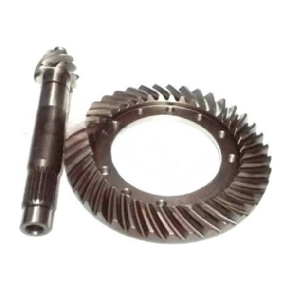

Parts › Transmission & Drive Axle › 9655-301

Available
Email for a quote
Komatsu 9655-301 Differential Carrier Assy
| OEM part number | 9655-301 |
| Fits | Komatsu |
| Models / notes | FGD30-12/14 |
| Category | Transmission & Drive Axle |
| Type | Aftermarket replacement |
Send us the quantity you need and we'll reply with pricing, usually within 24 hours. Not the exact part? We can source it. Send the part number or a photo.